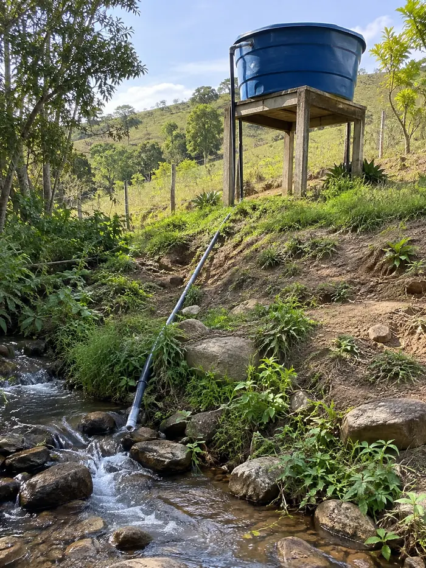
CAIXA D’ÁGUALeve água de uma parte mais baixa até um reservatório.
Use uma garrafa PET e peças simples para montar um sistema que aproveita a própria força da água e leva água para sua caixa, horta, criação e outras partes da propriedade.
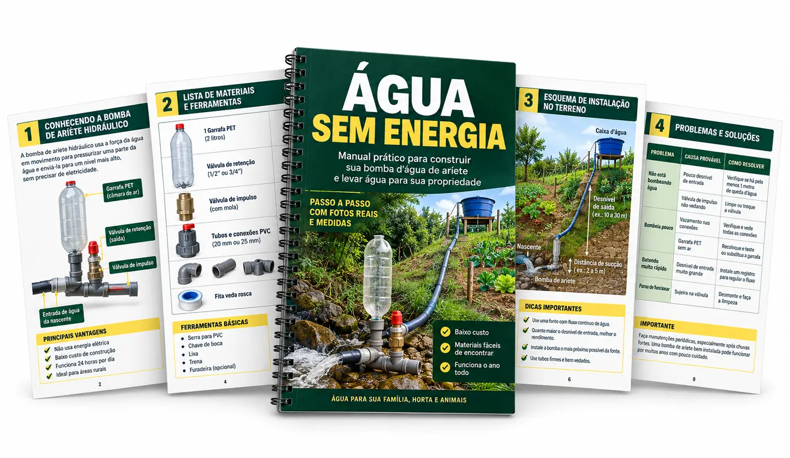
A própria água gera a força que faz parte dela subir para outro ponto da propriedade — sem bomba elétrica.
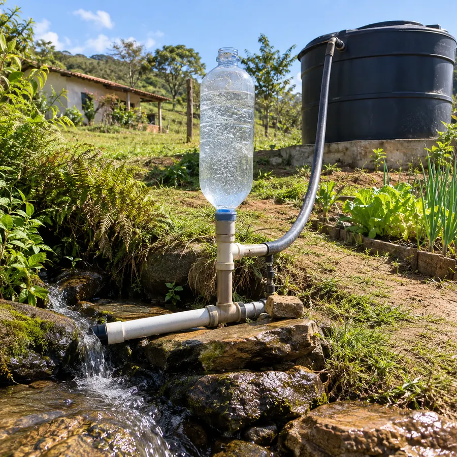
COMO FUNCIONA NA PRÁTICAAparelho: R$250 a R$900
Instalação com eletricista: R$150 a R$400
Consumo: soma todo mês na conta de luz
Parou a energia, parou a bomba
Investimento inicial pode passar de R$1.000
Peças simples do dia a dia: R$40 a R$120
Você mesmo monta, sem eletricista
R$0 de consumo — não usa energia elétrica
Pode trabalhar dia e noite*
Até 90% mais barato para montar ECONOMIA REAL
A água faz o trabalho. O sistema aproveita a pressão para mandar parte dela para cima.

CAIXA D’ÁGUALeve água de uma parte mais baixa até um reservatório.
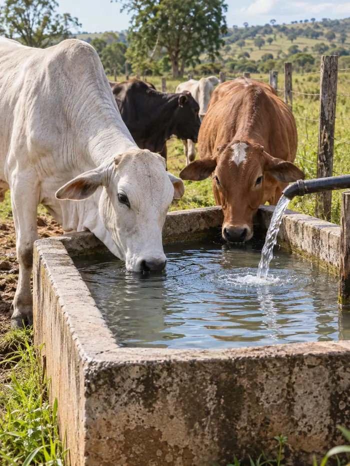
CRIAÇÃOAjude a manter bebedouros e reservatórios abastecidos para os animais.
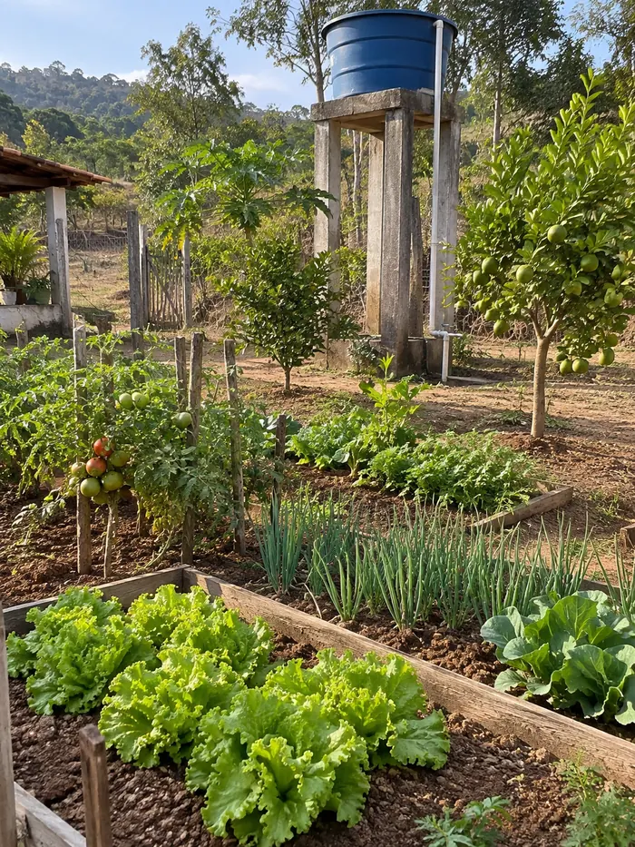
HORTA E PRODUÇÃOLeve água até um reservatório próximo da horta, pomar ou pequena produção.
No Plano Completo, você informa como é o seu terreno e recebe uma configuração personalizada.
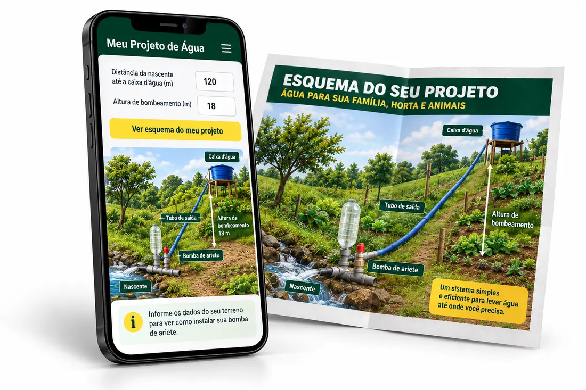
Você informa:
O sistema mostra:
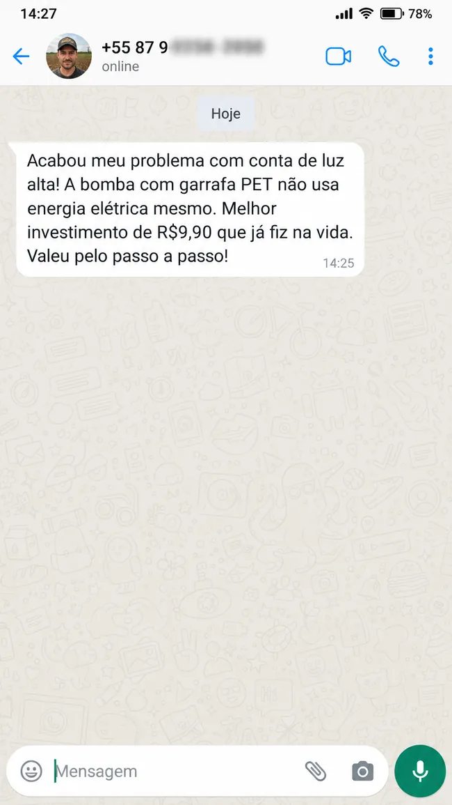
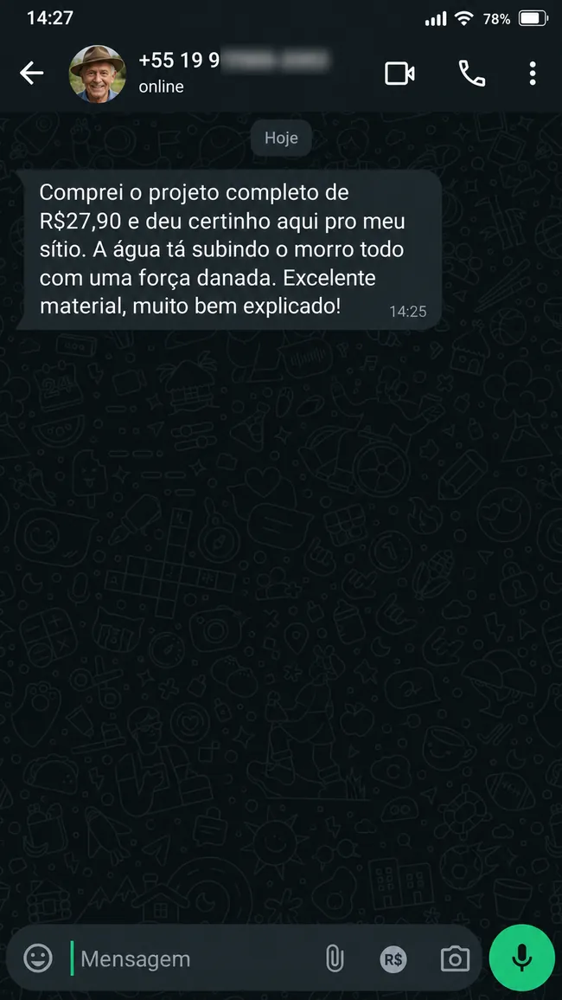
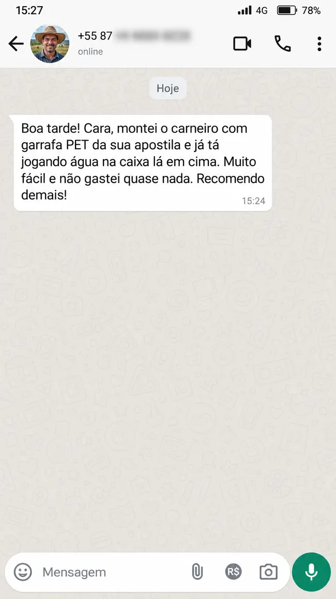
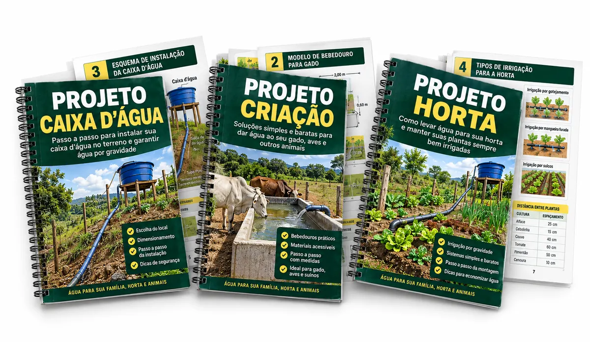
BÔNUS INCLUSO
Use um dos projetos como modelo ou gere uma configuração personalizada para o seu terreno.
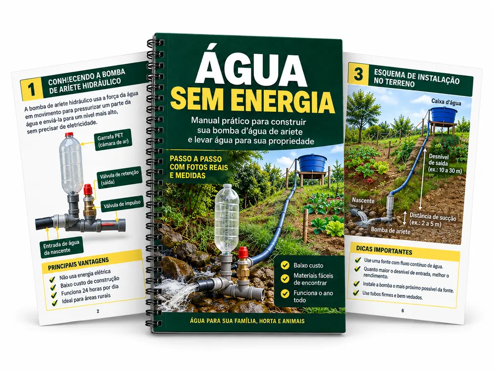
PLANO BÁSICO
De R$ 47,90 por
♢ Compra 100% segura
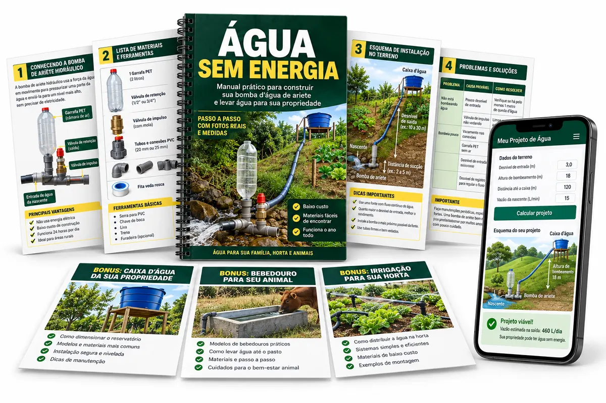
PLANO COMPLETO
De R$ 127,90 por
♢ Compra 100% segura
Teste sem risco. Se não funcionar no seu terreno ou você não gostar, devolvemos 100% do seu dinheiro.
Não. A apostila mostra tudo passo a passo com linguagem simples.
Não. É preciso ter água correndo e condições adequadas de desnível. O material mostra como verificar isso.
Não. Quando instalado nas condições corretas, o sistema aproveita a própria força da água.
Não. A garrafa PET faz parte do sistema junto com canos, conexões e outras peças simples.
Sim, quando as condições do terreno e a quantidade de água disponível forem adequadas, o sistema pode abastecer reservatórios e bebedouros.
Sim. Uma das aplicações é levar água até um reservatório usado na horta ou pequena produção.
No Básico você recebe a apostila completa. No Completo você recebe a apostila e acesso ao sistema que gera uma configuração personalizada a partir das medidas do seu terreno.
Sim. O conteúdo digital é liberado após a confirmação do pagamento.